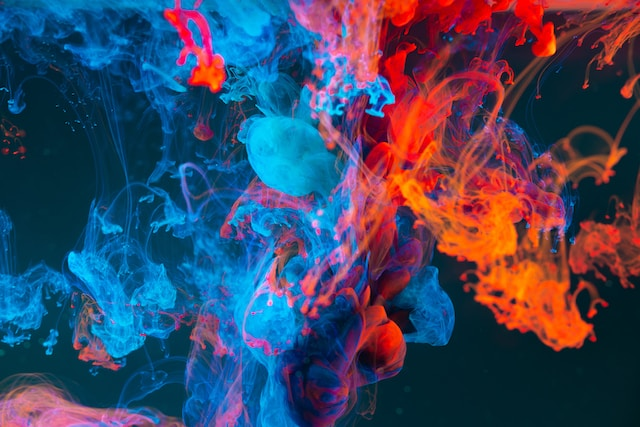

Overview
Modern art photography emerged in the early 20th century as photographers began to experiment with new techniques and subject matter. Unlike traditional photography, which sought to capture a realistic representation of the world, modern art photography emphasized abstraction, experimentation, and self-expression.